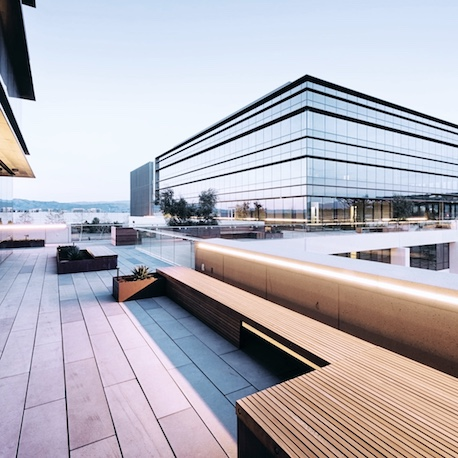
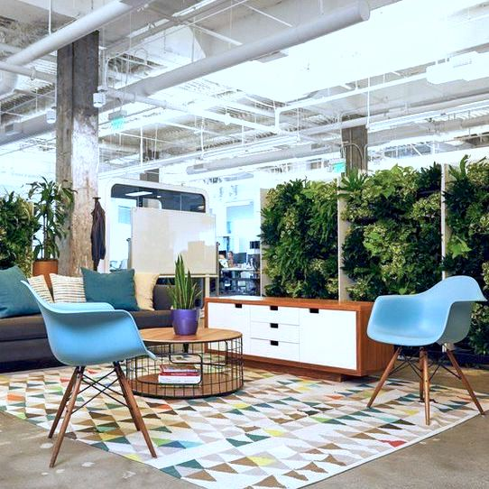
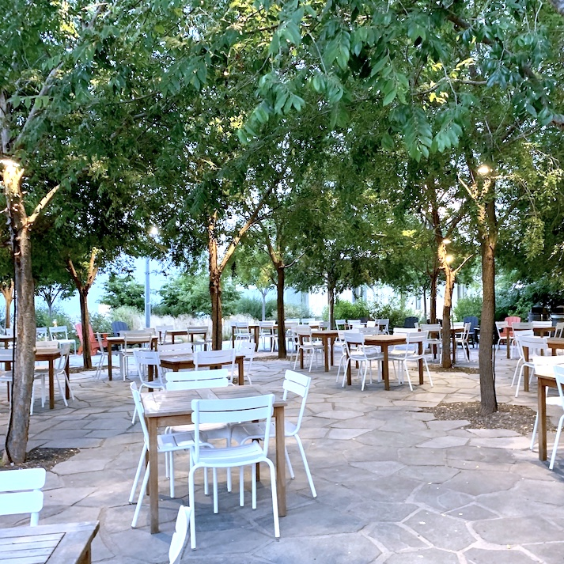
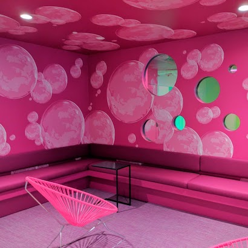
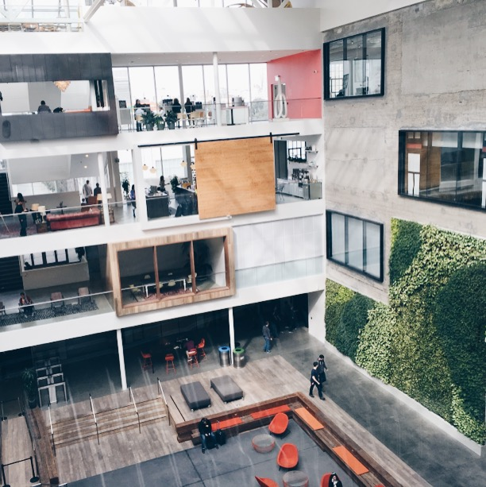
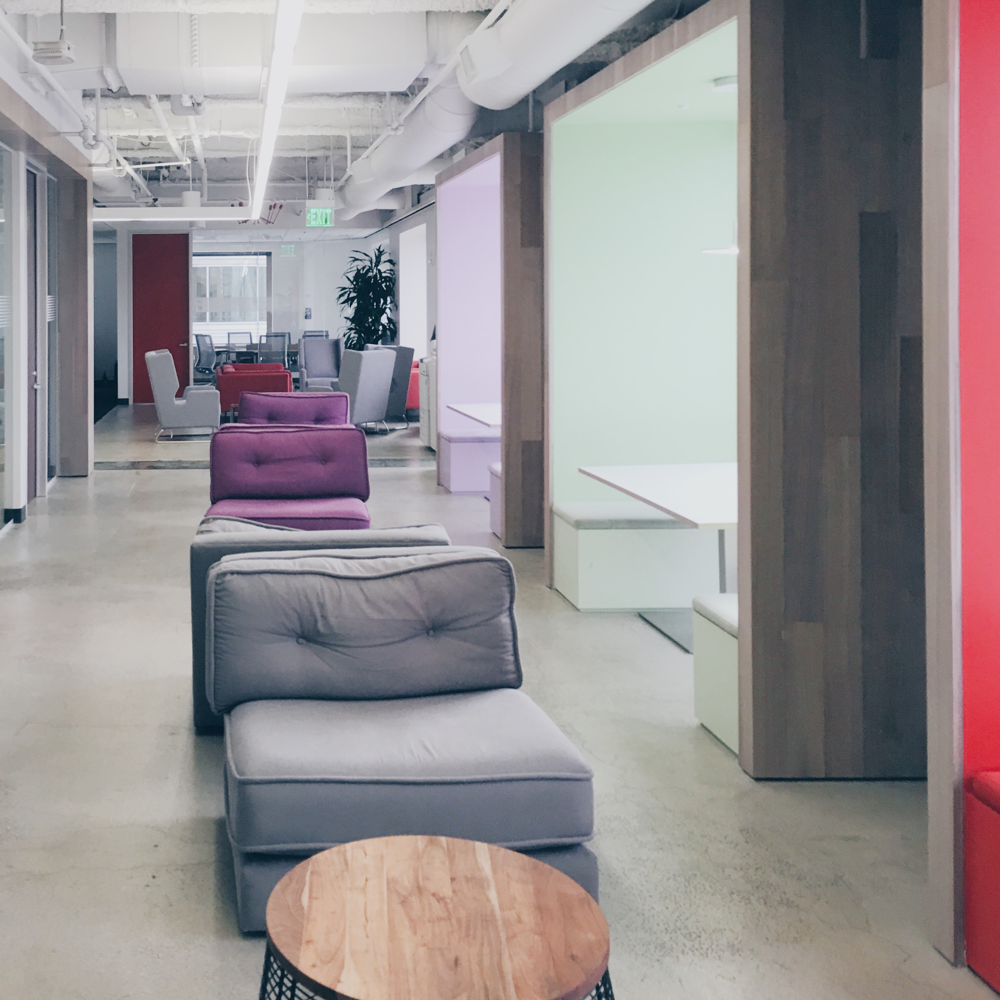
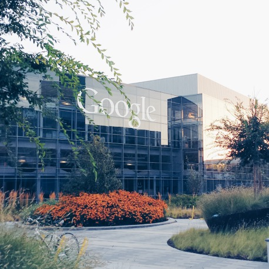
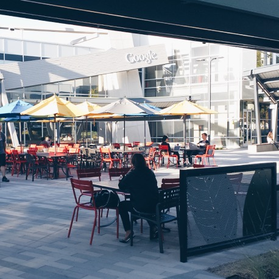
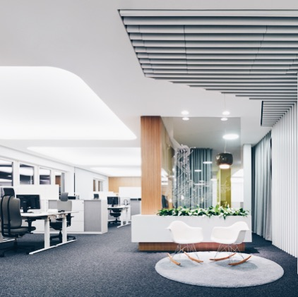
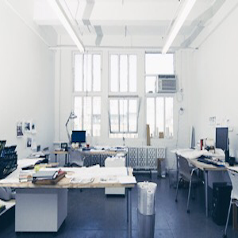

Music is my heart's delight, weaving through every facet of my life, from the solace of soothing melodies to impromptu shower serenades. No matter where I find myself, the comforting embrace of music is never far away. And if you ever feel inclined to ask, I'd be thrilled to sing for you.
At Work
Collaboration is where I truly shine – there's an undeniable magic in working together towards a common goal. I thrive on the energy and insights that each team member brings. Fast-paced environments are my comfort zone, and I take pride in my level of craftsmanship.
On The Go
Friends would describe me as the eternal optimist – a beacon of positivity with a heart full of compassion and a smile that's always ready to light up a room. Traveling is my passion, especially when it comes to exploring diverse cuisines. When I find myself in the presence of good food, happiness simply radiates from me.
Experience
A consumer-focused techie with an affinity for user experience.
Mobile is my domain, with expertise in iOS.

TikTok
Aug 2023 - Present
In the heart of TikTok's vibrant ecosystem, I lead the Social Interactions iOS Engineering team, spearheading the evolution of user engagement and connections. As the Tech Lead, I'm dedicated to enriching the social experience on our platform, fostering authentic interactions that resonate beyond content creation. From innovative chat features to novel ways of building communities, I'm actively shaping TikTok into a space where relationships flourish.

Airtable
April 2021 - Aug 2023
While coding is a valuable skill, it shouldn't be a barrier for innovation. This is why I'm thrilled about Airtable's mission to democratize software creation, breaking down accessibility barriers. As the 2nd iOS Engineer onboard, I'm instrumental in crafting tools that empower users to seamlessly engage with our platform on the fly.

Facebook
July 2019 - March 2021
Immersed in the realm of the Facebook iOS app, I'm dedicated to crafting captivating avenues for story-sharing. Since joining, I've been a driving force behind the launch of engaging features like Music Lyrics, Animated Photos, and Dynamic Music Effects. Feel free to explore these enhancements within your Facebook app, and while you're at it, dive into the world of AR effects.

Lyft
June 2017 - July 2019
Leading the charge within the Driver Engagement team at Lyft, I've spearheaded the creation of cutting-edge mobile features designed to elevate driver earnings and enhance overall business metrics. Beyond my team's efforts, I orchestrated a meaningful partnership with Venture Out, an LGBTQ tech conference in Toronto. These initiatives reflect my commitment to driving positive change within the company and the tech community. Join me in shaping the future of driver empowerment and fostering inclusivity at Lyft.

Airbnb
August 2016 - December 2016
Embarking on my journey with the mobile iOS team at Airbnb was a thrill beyond measure. I took pride in deploying innovative host features onto the Airbnb iOS app, showcased and celebrated during Air Open, where I empowered hosts by educating them about the full spectrum of tools we had meticulously built. Amidst these achievements, I stood as the sole iOS engineer, orchestrating the launch of City Registration—an impactful solution tailored to help hosts navigate market-specific regulations seamlessly.

LinkedIn
January 2016 - April 2016
I hit the ground running, swiftly transitioning into a productive role. Within a mere two weeks, I contributed significantly by launching prominent features that commanded attention—these included the streamlined share extension and the introduction of threaded comments to the dynamic feed.

Google
May 2015 - August 2015
During my second internship at Google, I embarked on an extraordinary journey within a stealth-mode team dedicated to constructing the iOS application from scratch. As the second member on the iOS team, I embraced complete ownership of the product, leveraging my skills to navigate its development. As a testament to my dedication and contributions, I was honored with a Spot Bonus before the culmination of my internship.

Google
September 2014 - December 2014
Marking my first internship at Google, this experience became a cornerstone of my journey into understanding craftsmanship. Collaborating alongside a team of exceptional engineers, I contributed to the development of an internal tool with far-reaching implications. This tool streamlined the organization of employee milestones and facilitated feedback collection, playing a pivotal role in their performance evaluations within the HR domain.

SAP
Jan 2014 - April 2014
Embracing the world of full-stack web development during my internship at SAP, I took on the challenge of crafting enterprise web solutions, particularly within the realm of insurance software. While navigating the intricate landscape of both front-end and back-end development, a realization struck—I preferred my tech endeavors to lean more towards the vibrant world of mobile consumer software.

Osellus
May 2013 - August 2013
My inaugural step into the realm of iOS development unfolded at Osellus, a small yet impactful company. This transformative experience not only marked my first foray into crafting mobile applications but also laid the foundation for my entire career in the mobile technology space.
A Chinese song originally performed by Faye Wong. The song is based on a tragic love story of a wife who waits for her husband's return from battle. She waits faithfully, never to see his return, and the red bean, sprouted from the blood of her tears, represents her eternal love.
In collaboration with Jennifer Xiong
An English interpretation of an originally Korean song performed by AKMU, a brother-sister duo. This cute little song is a playful take on the feeling of having a crush on someone when you're not even sure if they even know of your existence, and the fear of them not feeling the same way.
In collaboration with Jennifer Xiong
This is another English interpretation of the song Melted, performed by AKMU. The original Korean lyrics plays with the fact that, in Korean, the word "ice" and the word "adult" sound very similar. Comparisons are made between the two and there is the overall theme of coldness within adults like that of ice. Of course, in English, the two words are very different, so trying to preserve the meaning was a bit challenging. Nonetheless, please enjoy!
Unaccompanied Minors
UW A Cappella
Residence Life Don
Sometimes we’re called Residence Ambassadors, sometimes Residence Assistance. Either way, our job consisted of helping students transition into University life. Without a doubt, my experiences as a Don brought me with some of the most loveable people.
Together with my small team, we organized weekly events for over 300 students. I could not have asked for a better group of people to spend the term together with.